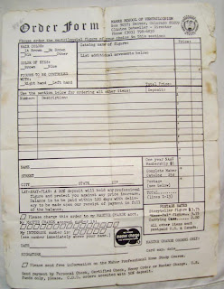

Voice from the past
2/22/2010
{kind=link}

From Renee' La Viness
When I was a teenager, back in the mid- late 1970's, my dad was helping me find professional vent figures, instead of the little Charlie McCarthy doll that Santa picked up at Sears for me, when I was only 12. (That Charlie doll and I were on evening radio for a good while and the dj dubbed him "Charlie McDoogle" which we kept for his name, after that.)
When searching for figures and more information, my dad found the info he was after. I don't know how he did it, back then... with no internet. Searching for such an unusual thing must have been terribly hard. But, he found it.
Before I could buy that vent figure, I was busy having children and playing house. I've never stopped wanting a professional figure, though. I still have Charlie and my husband made him a new, tinted monocle, years ago. I have clothes I bought and clothes I made for Charlie, over the years. I've brought him out on occasion, for my grandchildren to enjoy. However, I'm still hoping to one day buy a vent figure from you.
Tonight, as I was going through some of the things that survived a tornado on December 8th, 2008, I found this item I thought you might be interested in seeing. It was the old order form my dad came up with for me. I believe it originally came in a brown envelope with a catalog, but I did not see the catalog as I was searching, so I assume it did not survive the tornado. On the back of the order form, my dad had written "Natl American Association of Ventriloquists." I hope seeing this old order form makes you smile with memories of good times past.
Let's see... I recall some nifty features in the figures, back then. I recall winking, elbowing, sticking out the tongue and I can't remember if your figures were the ones that also had the natural mouth, or not. But, I do remember seeing them. I assume they didn't last so well, so folks prefer the slotted mouths, after all? Or, did the maker decide not to continue them? My husband is a custom cuemaker and I've seen him discontinue use of a material, because he is not happy with it.
I also had a huge notebook full of old newsletters for ventriloquists from back then, but I am not sure if I they are still here. A ventriloquist in Tulsa kindly gave them to me, at that time. So glad to have found you online. I have a feeling my granddaughter is going to want to follow in her Granny's footsteps... ;-)
When I was a teenager, back in the mid- late 1970's, my dad was helping me find professional vent figures, instead of the little Charlie McCarthy doll that Santa picked up at Sears for me, when I was only 12. (That Charlie doll and I were on evening radio for a good while and the dj dubbed him "Charlie McDoogle" which we kept for his name, after that.)
When searching for figures and more information, my dad found the info he was after. I don't know how he did it, back then... with no internet. Searching for such an unusual thing must have been terribly hard. But, he found it.
Before I could buy that vent figure, I was busy having children and playing house. I've never stopped wanting a professional figure, though. I still have Charlie and my husband made him a new, tinted monocle, years ago. I have clothes I bought and clothes I made for Charlie, over the years. I've brought him out on occasion, for my grandchildren to enjoy. However, I'm still hoping to one day buy a vent figure from you.
Tonight, as I was going through some of the things that survived a tornado on December 8th, 2008, I found this item I thought you might be interested in seeing. It was the old order form my dad came up with for me. I believe it originally came in a brown envelope with a catalog, but I did not see the catalog as I was searching, so I assume it did not survive the tornado. On the back of the order form, my dad had written "Natl American Association of Ventriloquists." I hope seeing this old order form makes you smile with memories of good times past.
Let's see... I recall some nifty features in the figures, back then. I recall winking, elbowing, sticking out the tongue and I can't remember if your figures were the ones that also had the natural mouth, or not. But, I do remember seeing them. I assume they didn't last so well, so folks prefer the slotted mouths, after all? Or, did the maker decide not to continue them? My husband is a custom cuemaker and I've seen him discontinue use of a material, because he is not happy with it.
I also had a huge notebook full of old newsletters for ventriloquists from back then, but I am not sure if I they are still here. A ventriloquist in Tulsa kindly gave them to me, at that time. So glad to have found you online. I have a feeling my granddaughter is going to want to follow in her Granny's footsteps... ;-)